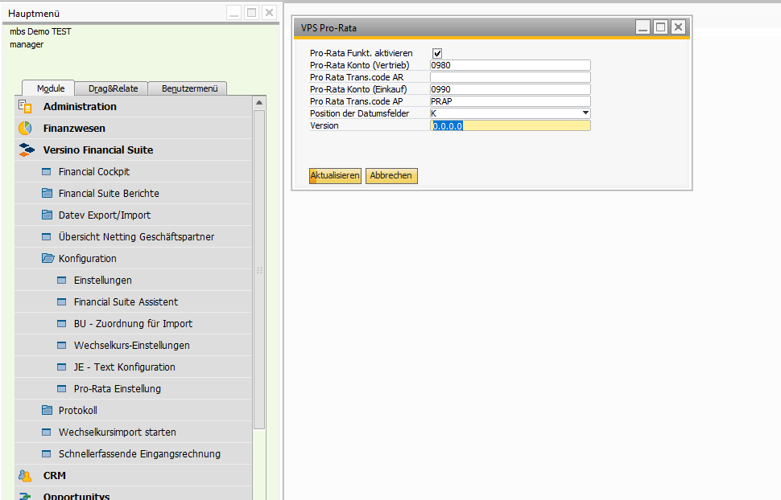
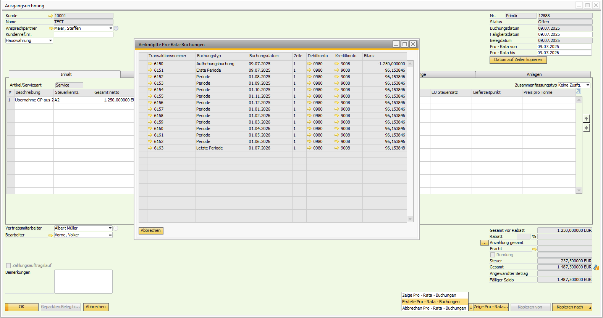

Periodenabgrenzung (Pro-Rata)
Überblick
Das Versino Pro-Rata Modul automatisiert die Erstellung zeitanteiliger Abgrenzungsbuchungen in SAP Business One. Wenn Sie eine Rechnung mit einem Leistungszeitraum über mehrere Monate erstellen (z.B. eine Jahreslizenz), verteilt das Modul die Beträge tagesgenau und automatisch auf die entsprechenden Perioden. Dies sorgt für eine korrekte, periodengerechte Gewinn- und Verlustrechnung.
Zugang & Konfiguration: Die Einstellungen erfolgen unter Versino Financial Suite > Konfiguration > Pro-Rata Einstellungen. Hier müssen Sie das Modul aktivieren, die notwendigen Abgrenzungskonten hinterlegen und können die Position der Datumsfelder festlegen (im Kopfbereich der Rechnung oder in einem separaten Register).
Unterstützte Dokumente: Eingangs- und Ausgangsrechnungen sowie die dazugehörigen Gutschriften.
Hauptfunktionen
Automatische Abgrenzungsbuchungen & Berechnung
Das System erstellt automatisch Journalbuchungen, um Rechnungsbeträge zeitanteilig und tagesgenau auf die entsprechenden Monate zu verteilen. Dabei werden unterschiedliche Monatslängen und Teilmonate korrekt berücksichtigt. Die Buchungslogik storniert die ursprüngliche Umsatz- oder Aufwandsbuchung, bucht den Gesamtbetrag auf ein Abgrenzungskonto und löst diesen dann monatlich zeitanteilig wieder auf.
Flexible Abgrenzung (Kopf- & Zeilenebene)
Das Modul fügt den Rechnungsformularen Felder für den Abgrenzungszeitraum (Von/Bis-Datum) hinzu. Sie können den Zeitraum entweder für die gesamte Rechnung im Kopfbereich festlegen oder für jede Rechnungszeile individuell definieren. Ein praktischer Button ("Datum in Zeilen kopieren") ermöglicht es, die Daten vom Kopf schnell in alle Zeilen zu übertragen.
Storno- und Korrektur-Funktionen
Abgrenzungen können einfach korrigiert werden. Erstellen Sie eine Gutschrift zu einer abgegrenzten Rechnung, werden die zugehörigen Abgrenzungsbuchungen automatisch proportional storniert. Alternativ können Sie über das Aktionsmenü im Beleg alle Abgrenzungen manuell stornieren, die Daten ändern und die Buchungen neu erstellen.
Integration & Unterstützung weiterer Funktionen
Das Modul ist nahtlos in SAP Business One und die Financial Suite integriert:
- Kostenrechnung: Alle Dimensionen (Kostenstellen, Projekte etc.) werden aus der Originalrechnung in die Abgrenzungsbuchungen übernommen.
- Fremdwährungen & Filialen: Das Modul funktioniert vollständig mit Fremdwährungs-Rechnungen und in Umgebungen mit mehreren Filialen.
- Buchungstext-Konfigurator: Wenn aktiviert, erhalten alle Pro-Rata-Buchungen automatisch aussagekräftige und nachvollziehbare Buchungstexte.
- DATEV & Reporting: Alle Abgrenzungsbuchungen werden korrekt im DATEV-Export und in Berichten berücksichtigt.
Anwendung
1. Vorbereitung: Einmalige Konfiguration
- Navigieren Sie zu Versino Financial Suite > Konfiguration > Pro-Rata Einstellungen.
- Aktivieren Sie das Modul über die Checkbox.
- Hinterlegen Sie ein Verkaufskonto für Umsatzabgrenzungen und ein Einkaufskonto für Aufwandsabgrenzungen.
- Wählen Sie die gewünschte Position für die Datumsfelder in den Belegen (Kopfbereich oder eigenes Register).
- Speichern Sie die Einstellungen.
2. Tägliche Anwendung in der Rechnung
- Erstellen und speichern Sie eine Eingangs- oder Ausgangsrechnung.
- Tragen Sie das Von-Datum und Bis-Datum des Leistungszeitraums ein (im Kopf oder in den Zeilen).
- Wählen Sie im Dropdown-Feld "Pro-Rata-Aktion" die Option "Buchungen erstellen".
- Bestätigen Sie die Aktion. Das System erstellt im Hintergrund die tagesgenauen Abgrenzungsbuchungen.
- Mit den Aktionen "Buchungen anzeigen" oder "Buchungen stornieren" können Sie die erstellten Buchungen jederzeit einsehen oder wieder entfernen.
Wichtig: Wenn Sie eine Rechnung mit bereits erstellten Pro-Rata-Buchungen ändern möchten, stornieren Sie zuerst die Abgrenzungen, nehmen die Änderungen vor und erstellen sie anschließend neu.
Tipps und Fehlerbehandlung
Hier finden Sie Lösungen für die häufigsten Fragen und Probleme:
- Problem: Die Pro-Rata-Felder oder der Funktionsbutton werden nicht in der Rechnung angezeigt.
Lösung: Prüfen Sie, ob das Modul in den Pro-Rata-Einstellungen aktiviert ist. Starten Sie SAP Business One neu, damit die Formularerweiterungen korrekt geladen werden. - Problem: Die Erstellung der Buchungen schlägt fehl.
Lösung: Stellen Sie sicher, dass die Abgrenzungskonten in den Einstellungen korrekt konfiguriert sind und alle betroffenen Buchungsperioden in SAP Business One geöffnet sind. - Problem: Die Betragsverteilung scheint falsch zu sein.
Lösung: Kontrollieren Sie die eingegebenen Von- und Bis-Daten auf ihre Korrektheit. Das System rechnet tagesgenau.